contents | previous | next HAD it indeed been Mr. Lessington himself, who had thus loudly summoned his daughter to return home, it would have been difficult for her to have concealed from him the agitation of her mind, notwithstanding her utmost endeavours to compose herself; but it was only Abraham, a servant who was occasionally bailiff, coachman, footman, groom, or whatever was wanted in the family, who, approaching her out of breath, cried, "Lord, Miss, I've been ever so long looking a'ter you....Why, here a been all on em looking for your coming; for what d'ye think?" "Indeed, I don't know," replied Rosalie, breathless, and terrified at this preamble.
) View image of 114 View image of 114"Ah! Miss—Miss!—you can't guess whose come?" "No! no! Abraham—do pray tell me?" "I've got a good mind not, for your giving me such a dance after you. (Abraham had seen her grow up from infancy, and was no observer of forms). However, I'll tell you for once: 'tis both our young masters; 'tis Mr. William from Oxford, and Mr. Francis from London—both—both on um be comed to be present at the wedding, and a rare time we shall all on us have on't I warrant too." "I am very glad, indeed, (said Rosalie, relieved from a thousand apprehensions of she knew not what). I thought my brother William would not be here till to-morrow, and as for Frank, I did not know he was expected." She then hastened into the house, and in meeting her brothers, particularly the eldest, to whom she was much attached, the embarrassment of her manner was not remarked, nor was any inquiry made where she had been.
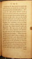 View image of 115 It was not till she retired to dress for dinner that she was at liberty to reflect on all that had passed with Montalbert. The promise she had given seemed to be a relief to her spirits, when she remembered that it should make her consider herself as betrothed to the only man in the world whom she preferred to all others; that she had now the best reasons in the world to strengthen her resolution, never to listen to Hughson; reasons, which if she dared plead them, her father himself could not disapprove. She ran over in her mind every look, every sentence of Montalbert, and sincerity and tenderness seemed to dwell upon his tongue. What but real affection could induce him to speak, to act as he had done? and what could be so fortunate as her inspiring such a man with a passion such as he professed to feel for her. A consciousness of attractions, which till very lately she had never suspected that she possessed, gave her a momentary pleasure; but she felt that those attractions would
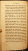 View image of 116have been without value, had they not secured for her the heart of Montalbert. Soon dressed for the day, she sat in the window of her bed chamber, pensively looking towards the quarter where Holmwood House was situated, though she could not distinguish it. "He is gone! (said she). Already he is on his way to London; in a few days after he arrives there he will leave it—will leave England—the sea will be between us!" She took out the picture he had given her, and, for the third time since it had been in her possession, fixed her eyes earnestly upon it. The candour and integrity of the countenance struck her particularly. "Never, (sighed she), can the heart that belongs to these features be otherwise than generous, tender, and sincere." She was thus feeding the infant passion which had taken entire possession of her mind, and was lost in thought, holding the picture still in her hand, when her elder brother opened the door. "Are you dressed, Rosalie? (said
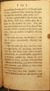 View image of 117he), and may I come in?"—"O yes! yes! brother, (answered she, hurrying the picture into her pocket), pray come in." "I have a great deal to say to you, my dear Rose, (said he); come, give me a place in the window by you. You are very much improved, my love, since I saw you last; I don't wonder at the havoc you make; but my mother complains of you, Rose." "On what account, my brother? I am sure I never intentionally offended my mother." "But she tells me that you have now an opportunity of marrying extremely well, but that from some unaccountable perverseness, or unreasonable prejudice, or perhaps, (added he, fixing his eyes earnestly on hers), perhaps through some unhappy predilection, you drive from you, with contempt and disdain, a man every way unexceptionable." "You have seen him, brother, (answered Rosalie), and can tell whether you
) View image of 118 View image of 118think him all that my mother has represented." "I have only seen him for a moment, and have hardly exchanged ten words with him. His person is neither good nor bad, but surely my sister has too much sense to refuse a man merely because he is not an Adonis." "But indeed, brother, it is not that. Mr. Hughson is a man, whom it is impossible I can ever like: he is silly , noisy, and conceited; a boaster, and a sort of man whom I know will displease you when you see more of him. I dare say his fortune is greater than I have a right to expect; but I never saw a man more likely to spend a fortune than he is, and I cannot think there is much worldly wisdom in marrying a man with whom I might enjoy a short affluence, that would only make me feel more severely the indigence he might reduce me to." "All that is very well, (said William Lessington); but tell me, Rosalie, what
) View image of 119 View image of 119do you say as to this prepossession in favour of another, of which my mother accuses you?" "I can say nothing, (replied she), because I—because I know that—indeed I do not know who she means." "Is there no such predilection existing then, Rosalie?" "Not for the person my mother thinks of," answered she, colouring still higher. "You allow there is for some other then?" "Not at all—I am sure I did not say any thing like that; but if there were, why, my dear brother, should it of necessity be in favour of a person who would disgrace my family?" "There may be very improper attachments, Rosalie, (replied he very gravely), which may not be disgraceful in the usual acceptation of the word: as, for example, if a young woman should be flattered into a partiality for a boy of a different religion, and in whose power it could never be to fulfill any promise which a childish passion
) View image of 120 View image of 120might induce him to make. (The complection of Rosalie changed to a deeper scarlet). I see how it is, my sister, (added he), and will now distress you no farther; but I trust to your own sweetness and candour to give me an opportunity of discussing this matter when we are both more at leisure.......I believe dinner is now ready." "Before you go, my dear William, (cried Rosalie, recovering herself a little), let me assure you, that my mother has no grounds whatever for her suspicions, but because Mr. Charles Vyvian has appeared particularly pleased at our meeting, and what was more natural? We were brought up together from children. As to myself, I certainly did the other night find more pleasure in talking to my old friend, whose mother I love so much, and am so much obliged to, than in dancing with Hughson, who is the most disagreeable man in the world to me—perhaps I might be rude to him—I am afraid I was; but why
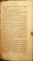 View image of 121would my mother compel me to dance with him?" "And is that all, Rosalie?" "That is all, upon my honour, (replied she), in regard to Mr. Vyvian." Young Lessington, who did not know Montalbert even by name, appeared satisfied, and they went down together; when, from the beginning of the dinner, conversation, and the quantity of wine that Hughson soon swallowed, Rosalie flattered herself that long before the close of the evening he would do or say something that would thoroughly disgust her elder brother, and, by convincing him that she was right in refusing him, procure for her a defense against the irksome importunity of his future addresses. In this she was not mistaken; before young Lessington had been two hours in company with Hughson, he was compelled to own that Rosalie could not be blamed for having kept at a distance a man whose manners were so unpleasing. The other brother, however, who had seen very dif
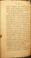 View image of 122ferent company, and whose ideas had taken quite another turn, thought of him as he did of himself, that he was "a clever, sprightly, little fellow." Dinner was hardly over, and the bottle going as briskly about as it could do before the ladies retired, when Abraham came stumbling into the room, and muttered something which nobody understood, and, before there was time for inquiry, Mr. Charles Vyvian and Mr. Montalbert entered, to the displeasure of some of the company, and to the astonishment of Rosalie, who, on meeting her brother's eyes, looked so confused, that all the suspicion Mrs. Lessington had hinted to him in the morning seemed to be confirmed. The reception they received was cold and formal, particularly from Mrs. Lessington, who gravely expressed her surprise, after what Mr. Vyvian had told her, at his making so long a stay in the country. "Oh! (answered he), I was so unwell yesterday, that my good old doctor would not hear of my setting out to-day; and,
) View image of 123 View image of 123as my mother thinks we are still upon the ramble, and will not be uneasy, I have persuaded my worthy old Abbé to say nothing about it: however, we intend to be good boys, and to go off to-morrow; and, upon my honour, (continued he, rising and taking her hands), my dear Mrs. Lessington, I only cam to know if you could not give me some little commission to my mother, to put her in good humour with her truant boy........Come—come—I know you will oblige me with a letter—or—you, Madam, perhaps, (turning to one of the other sisters)—if not, I am sure Miss Rosalie will." The repulsive gravity with which Mrs. Lessington answered him, was but ill seconded by the increasing confusion of her daughter, who hesitated, blushed, and stammered out a few incoherent words; symptoms which did not escape her brother, who narrowly watched her, and who failed not to impute it all to a very different motive than the real one.
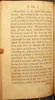 View image of 124Montalbert, in the mean time, was on thorns; surrounded as she was, there was no possibility of speaking to her, and he could not bear to leave her without having fixed on some means by which they might hear from each other. He recollected that none of her family understood Italian: he looked round to see if it was likely any one in the room did, and being soon convinced he had nothing to apprehend, unless it was from the Oxford man, and even with him he thought the chances were much in his favour, he told Rosalie, addressing her with great gravity, that since he had the pleasure of seeing her, he had recollected the words of the Italian song she had mentioned, and that, if she would favour him with a pen and ink in the next room, he would write them out. At this moment the mistress of the house, receiving an hint from her husband to depart, said, as she rose from the table, "We will send you one down, Sir."—"O no! (replied he), rather let me write it, dear
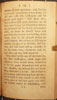 View image of 125Madam, in your apartment; and, Vyvian, as we must immediately return home, we will now wish Mr. Lessington and his friends good night." This short ceremony passed with great formality on all sides, and Vyvian and Montalbert following the woman of the family into another room, the latter sat himself down with great solemnity to write out his song, which having done in the plainest Italian he could imagine, but written as if it was in measure, he gave it to Rosalie; and Vyvian, who had been talking earnestly to her the whole time, reluctantly took his leave also, and they both departed. They were hardly out of the room before Mrs. Lessington, whose anger and suspicion were roused anew, demanded to see the paper Montalbert had given her. Rosalie, not without fear and trembling, delivered it to her. She looked at it a moment, and believing from the manner in which it was written it was really a song, gave it back to her again, not without evident marks of displeasure, and
) View image of 126 View image of 126many hints of her resolution to inform Mrs. Vyvian where her son was, and of the impropriety of his conduct, if he did not leave the country the next day. Of all this, as Rosalie was not obliged to think it addressed to her, she took no notice. The next day the wedding of her second sister and Mr. Blagham was celebrated. The party were more noisy and disagreeable than is even usual on such occasions. Hughson was the most drunk, and consequently the most impertinent; and never was an hour so welcome to Rosalie as that which took them all away, by the favour of a full moon, and left her alone with her mother. Till now the tumult, with which she had been surrounded, had not allowed her a moment, except those allotted to repose, to indulge reflections on what had passed. The sullen calm that succeeded was calculated to restore her dissipated and bewildered thoughts. Her mother, busied in arranging her house, left her to herself; her father had accompanied the bride and
) View image of 127 View image of 127bridegroom to their house, and was afterwards to go on a tour with them into the eastern part of the county. It was at once a matter of pleasure and surprise to Rosalie, that he had never once proposed to her being of the party, and she remarked that he now appeared much less anxious than her mother to promote with her the suit of Mr. Hughson; it seemed as if he would have been as well contented that his daughter Maria should ensure this important conquest. Mr. Lessington was one of those men who have just as much understanding as enable them to fill, with tolerable decency, their part on the theatre of the world. He loved the conveniences of life, and indulged rather too much in the pleasures of the table. His less fortunate acquaintances (a race of people to whom he was not particularly attached) knew that Mr. Lessington was not a man to whom the distressed could apply with any hope of receiving any thing but good advice. Those who were more fortunate had for
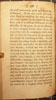 View image of 128 the most part a very good opinion of Mr. Lessington. If he was exact and somewhat strict in enacting his dues, he was also very regular in the duties of his office; and if he did not feel much for the distresses of the poor, he never offended, as some country curates have done, the ears of the rich, by complaints which those who overlook the labourers in the vineyard are always so unwilling to hear. He had brought up a large family respectably, and every body concluded he had some private fortune, besides the two or three thousand pounds he was known to have received with his wife. He kept a post-chaise; not, indeed, a very superb and fashionable equipage, but very well for that country: his cart horses drew it, but they were sleek and well trimmed, and Abraham, trussed up in a tight blue jacket, and his broad cheeks set off by a jockey cap, made a very respectable appearance as conductor of a vehicle which gave no inconsiderable degree of consequence to its owners in a country thinly inhabited
) View image of 129 View image of 129by gentlemen. Mr. Lessington was the most punctual man imaginable at all meetings of the clergy, where he did equal honour to the sublunary good things that were to be eaten, and the spiritual good things that were to be listened on. He had an high idea of his consequence in the church, and was a violent opposer of all innovations; against which he had drawn his pen with more internal satisfaction to himself than with visible profit to his bookseller. His works, though he read them with extreme complacency, by having, though want of orthodox taste in the modern world, the misfortune to be, according to a term most painful to the ears of an author, shelfed. This, however, affected Mr. Lessington less than it would have done many authors: for he wrote less for literary fame, or literary profit, than to recommend himself to certain persons who so greatly dreaded any of those impertinent people that dare to think some odd old customs might
) View image of 130 View image of 130be altered a little for the better; that nothing would, he knew, be so effectual a recommendation to the favour of these dignitaries as zeal, in stopping even with rushes the gaps threatened by such innovators, even before they were visible to any but the jealous eyes that saw, or fancied they saw, the whole fence levelled. The prosperity of his family might be considered as being in some degree the effect of his thus keeping always on the right side, for he was reckoned a rising man, and one who would at no very remote period be promoted to higher dignities. Mr. Blagham had not been entirely without considerations of this sort, when he married a wife with no other portion than her wedding clothes; but Mr. Lessington had promised her something handsome at his death, and there was no doubt in the mind of the lawyer of his ability to fulfill his promise. Mrs. Lessington and Rosalie had now been at home alone for three days. The
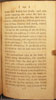 View image of 131former had settled her house, and was quietly enjoying the order she had restored after all the bustle they had lately been in; while Rosalie, with mingled emotions of fear, anxiety, and doubt, waited for intelligence from Montalbert. It was in the evening of the third day, that as she was walking in a sort of court, that was before the house next a road, an horseman stopped, and inquired if this was not the parsonage? On Rosalie's answering in the affirmative, he produced a letter, which he said he had been sent with from Lewes. The predominant idea in the head of Rosalie being Montalbert, she trembled like a leaf when the man gave her the letter, and, without considering whether it was likely her lover should send it thus openly, or how it should come from Lewes, she hastened breathless into the house to obtain a light to read it by, for it was now nearly dark. In her way to the kitchen she was met by her mother, who seeing her extreme agitation, and a letter in her
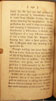 View image of 132hand, for she had not had presence of mind to conceal it, immediately fancied it came from Charles Vyvian, who was always haunting her imagination. In this persuasion she took if from her daughter, and carrying it immediately to a candle, found—not a billet-deux to Rosalie, but intelligence of a very different nature—it was a letter from Mr. Blagham, informing her, after a short preface, that Mr. Lessington died that morning in an apoplectic fit. Though nothing was more likely than such an event, from the form and manner of life of her husband, it had never once occurred to her as possible. The shock, therefore, was great, and the widow's grief not a little increased by the reflection, that their income arising from church preferment was at an end. Rosalie felt as she ought on the loss of a parent; but as it was more to the purpose to endeavour to assuage her mother's sorrow than to indulge her own, she gave her whole attention to that purpose. Mrs.
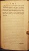 View image of 133 Lessington was too reasonable to be a very inconsolable widow, and in a few hours was in a condition to consider what ought to be done, which Rosalie set about executing, by writing to Mr. Blagham, and giving such orders as her mother thought necessary.
|
){kind=link}
){kind=link}
){kind=link}
){kind=link}
){kind=link}
){kind=link}
){kind=link}
){kind=link}
){kind=link}
){kind=link}
){kind=link}